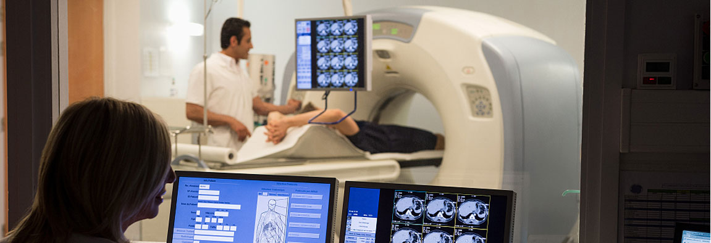
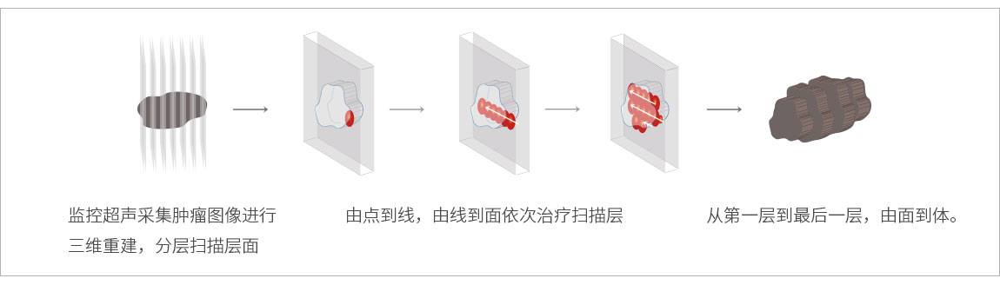
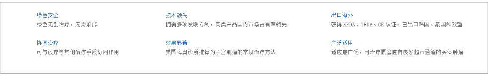

完整疗愈健康管理中心
通过生物电，生物共振，能量学，心理等方法，综合对客人进行细胞层面的保养，尤其是线粒体ATP层面上的保养。
根据大量临床观察和实验结果表明子宫肌瘤是一种激素依赖性肿瘤。雌激素是促使肌瘤生长的主要因素，还有学者认为生长激素（GH）与肌瘤生长亦有关，GH能协同雌激素促进有丝分裂而促进肌瘤生长，并推测人胎盘催乳素（HPL）也能协同雌激素促有丝分裂作用，认为妊娠期子宫肌瘤生长加速除与妊娠期高激素环境有关外，可能HPL也参加了作用。临床表现的症状有以下几点：（1）子宫出血；（2）腹部包块及压迫症状；（3）疼痛 ；（4）白带增多；（5）不孕与流产；（6）贫血 等等
贝德瑞聚焦超声肿瘤消融机，将体外低能量的超声波聚焦于体内病灶，利用超声波的热效应和机械效应，在焦点处产生瞬间的高温，进行由点到线、由线到面、由面到体逐点扫描固化的方式，使病灶组织不可逆坏死，达到既杀灭病灶组织又不损伤靶区外组织，实现治疗目的。
治疗原理
治疗流程
聚焦超声肿瘤消融机优势
